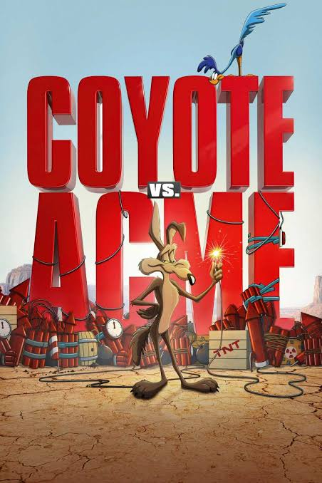

Coyote vs. Acme
Year: 2026 • Genre: Comedy / Family
Coyote vs. Acme has had one of the most unusual journeys to the big screen, but thankfully the long wait was worth it. With great slapstick humor, plenty of iconic Looney Tunes characters, and some surprisingly heartfelt moments, this is a fun family movie that deserved to be released.
Review
Date Watched: September 7, 2026
Where Watched: Theaters
Adaptation? Yes — loosely based on a 1990
New Yorker magazine piece
Quick Hook (First Impression)
Coyote vs. Acme has had a very interesting road to the big screen, to say the least. The movie was originally supposed to be released in 2023, but Warner Bros. ultimately decided to remove it from its release schedule and use the completed film as a $30 million tax write-off, leaving its future completely uncertain.
Fortunately, Ketchup Entertainment stepped in and acquired the distribution rights for $50 million, saving the film from potentially being lost forever. Usually, when a studio writes off a project, the movie is either unfinished or hasn't even started production. What makes Coyote vs. Acme such an unusual situation is that the film was completely finished and had even gone through test screenings before Warner Bros. decided to shelve it.
After finally getting the opportunity to see the film, I'm happy to report that Ketchup Entertainment made a smart investment. Coyote vs. Acme is a very entertaining and fun movie to watch with the whole family, and I'm glad audiences finally have the opportunity to see it on the big screen.
Story / Concept
The story is fairly simple and, honestly, somewhat predictable in the direction it is going. Wile E. Coyote decides to take Acme Corporation to court after its products repeatedly fail him, quite literally blowing up in his face. From there, the movie turns the classic Wile E. Coyote and Acme relationship into a courtroom comedy and family adventure.
Even though I could predict where the story was going, that didn't take away from the heartfelt moments throughout the film. One of my favorite moments comes during the climax when Road Runner comes in to support Wile E. Coyote during his case and even acknowledges him as a friend.
Considering that Wile E. Coyote and Road Runner have spent decades chasing each other in the classic cartoons, seeing Road Runner recognize Wile E. as a friend was a surprisingly heartfelt moment. It gives their relationship a little more emotional depth and provides the movie with a satisfying conclusion.
I also really liked how the movie explains why the Acme products that Wile E. Coyote purchases constantly blow up in his face. The classic cartoons never needed to explain it because the joke itself was the point, but giving the running gag an explanation works surprisingly well within the story this movie is trying to tell.
Performances
The biggest positive I can say about the live-action cast is Will Forte, who does a good job playing Kevin Avery, a lawyer who would rather settle his cases than actually fight them. Forte gives the character enough personality to make him entertaining and helps carry much of the live-action side of the movie.
Unfortunately, I felt that most of the other live-action characters were fairly bland. They mostly fill their roles in the story without having enough personality or charisma to make them particularly memorable.
The biggest example for me is Buddy Crane, played by John Cena. Buddy could have been a truly great villain, and I do think John Cena did the best he could with the character. However, Buddy doesn't really have much charisma or personality of his own, which ultimately causes him to feel like another bully from a family movie rather than a memorable antagonist.
When it comes to the animated characters, Wile E. Coyote is obviously the star of the film, and thankfully the movie understands that. Seeing Wile E. finally get the opportunity to be the central character of a feature-length story is one of the movie's biggest strengths.
I also enjoyed seeing other classic Looney Tunes characters make appearances throughout the movie. Bugs Bunny and Daffy Duck are great additions, while Foghorn Leghorn being one of the main antagonists was an especially fun choice.
Pacing / Flow
At 1 hour and 43 minutes, Coyote vs. Acme moves along at a comfortable pace. The movie doesn't overstay its welcome, and there is enough comedy and Looney Tunes chaos throughout to keep things moving.
The predictable nature of the story does make some of the major developments easy to see coming, but the movie makes up for that with its humor, character interactions, and slapstick comedy. I never felt like the movie dragged for too long, and the relatively short runtime works in its favor.
The movie also does a good job of balancing its courtroom story with the animated comedy. It doesn't become so focused on the legal side of the story that it forgets this is ultimately a Looney Tunes movie.
Themes / Meaning
At its core, Coyote vs. Acme is about standing up for yourself and fighting against something that seems impossible to overcome. Wile E. Coyote has spent his entire life being frustrated by Acme products, so finally getting the chance to hold the company accountable gives his character a different kind of story than what we normally see from him.
The movie also explores the idea of persistence. Wile E. Coyote is one of the most persistent characters in cartoon history. No matter how many times his plans fail, he always gets back up and tries again. That characteristic translates surprisingly well into the story and makes his determination to fight Acme feel fitting for the character.
The relationship between Wile E. Coyote and Road Runner also provides the movie with one of its more meaningful moments. Their relationship has always been built around the chase, but seeing Road Runner acknowledge Wile E. as a friend reminds us that underneath all of the slapstick violence, these characters have a relationship that audiences have followed for decades.
Final Thoughts
My favorite part of the entire film was easily the slapstick humor. Growing up watching old Looney Tunes cartoons, one of the trademarks of the franchise has always been its physical comedy and the ridiculous ways characters get themselves into trouble. The slapstick humor in Coyote vs. Acme made me feel like I was watching one of those old cartoons again, just expanded into a feature-length movie.
Another major positive is the use of the iconic Looney Tunes characters. Wile E. Coyote is obviously the main attraction, but seeing Bugs Bunny, Daffy Duck, and Foghorn Leghorn was a lot of fun. Foghorn being one of the main antagonists was particularly entertaining and gave the movie another classic character to play around with.
However, I did have some issues with the animation. I understand that this is a live-action/animation hybrid and that the filmmakers were trying to make the animated characters blend more realistically into the live-action world. Unfortunately, some of the characters looked clunky and awkward when moving around on the big screen.
Foghorn Leghorn was the biggest example of this for me. There were several moments where his movement felt unnatural, and because the movie was being shown on a large theater screen, those issues were more noticeable than they probably would have been at home.
My other major issue was the performances of some of the live-action characters. Aside from Will Forte, who I thought did a good job as Kevin Avery, most of the characters felt fairly bland and mostly existed to fill their roles within the story.
Despite those complaints, I still had a very good time with Coyote vs. Acme. The movie isn't going to reinvent the wheel when it comes to its story, but it doesn't need to. The combination of classic Looney Tunes characters, slapstick comedy, a surprisingly heartfelt story, and a fun family adventure makes this an enjoyable movie.
More importantly, I'm very happy that this movie was finally able to get its theatrical release. After everything that happened behind the scenes, Coyote vs. Acme easily could have disappeared forever. Instead, Ketchup Entertainment saw the potential in the film, took a chance on it, and now another company is reaping the benefits of a movie Warner Bros. had already completed.
If anything, this should be a lesson to Warner Bros. and other studios not to give up so easily on completed movies. A film that was once considered worth writing off as a tax deduction has now become a theatrical release that audiences can actually enjoy.
Who is this for? Fans of Looney Tunes, families looking for a fun comedy, and anyone who enjoys old-school slapstick humor. It's also worth checking out for anyone who followed the movie's unusual journey from being shelved to finally receiving a theatrical release.
Who should skip it? Anyone who isn't particularly interested in Looney Tunes or slapstick comedy may not get as much out of the movie. Viewers looking for a more complicated or unpredictable story may also find the straightforward plot underwhelming.
One-Sentence Verdict: Coyote vs. Acme is a fun and surprisingly heartfelt Looney Tunes adventure with excellent slapstick humor and plenty of iconic characters that deserved far better than being nearly lost as a tax write-off.
What Worked
- The slapstick humor captures the spirit of the classic Looney Tunes cartoons.
- Wile E. Coyote gets the spotlight as the central character.
- Great use of iconic characters like Bugs Bunny, Daffy Duck, and Foghorn Leghorn.
- Will Forte gives an enjoyable performance as Kevin Avery.
- The explanation behind Acme's products malfunctioning is clever.
- The Road Runner moment during the climax provides a surprisingly heartfelt payoff.
- The movie works well as a fun family comedy.
What Didn't
- Some of the animation looks clunky and awkward, particularly Foghorn Leghorn.
- Several of the live-action characters feel bland.
- John Cena's Buddy Crane lacks the charisma and personality needed to make him a memorable villain.
- The overall story is fairly predictable.
Optional Gut Check
Rewatchable? Yes
Would I recommend this casually to a friend? Yes
I'd love to hear your thoughts. Agree or disagree? Email me at ross@nobodycritics.com